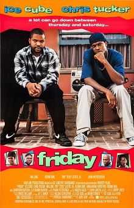

| Name | Images | Description | Duration | The Fast and The furious: Tokyo Drift |  |
The Fast and the Furious: Tokyo Drift is a 2006 action film directed by Justin Lin and written by Chris Morgan. It is the standalone sequel to The Fast and the Furious (2001) and 2 Fast 2 Furious (2003) and is the third main installment in the Fast & Furious franchise. It stars Lucas Black and Bow Wow. In the film, car enthusiast Sean Boswell (Black) is sent to live in Tokyo with his estranged father and finds solace exploring the city's drifting community. |
1h 44m |
|---|---|---|---|
| Rocky | Rocky is a 1976 American sports drama film directed by John G. Avildsen and written by and starring Sylvester Stallone. It is the first installment in the Rocky franchise and also stars Talia Shire, Burt Young, Carl Weathers, and Burgess Meredith. In the film, Rocky Balboa (Stallone), a poor small-time club fighter and loanshark debt collector, gets an unlikely shot at the world heavyweight championship held by Apollo Creed (Weathers). |
1h 59m | |
| Prayer Before Dawn |  |
A Prayer Before Dawn is a 2017 biographical prison drama film directed by Jean-Stéphane Sauvaire and written by Jonathan Hirschbein and Nick Saltrese. The film stars Joe Cole and is based on the book A Prayer Before Dawn: My Nightmare in Thailand's Prisons by Billy Moore. It is based on a true story. |
2h 2m |
| Friday |  | Friday is a 1995 American buddy comedy film directed by F. Gary Gray and written by Ice Cube and DJ Pooh. The first installment in the Friday trilogy, the film stars Ice Cube, Chris Tucker, Nia Long, Bernie Mac, Tiny "Zeus" Lister Jr., John Witherspoon, Regina King, and Anna Maria Horsford. Set in South Central Los Angeles, it follows unemployed friends Craig Jones and Smokey, who face troubles after becoming indebted to a local drug dealer. |
1h 30m |
| Central Intelligence |  |
Central Intelligence is a 2016 American buddy action comedy film directed by Rawson Marshall Thurber and written by Thurber, Ike Barinholtz and David Stassen. The film stars Kevin Hart and Dwayne Johnson as two old high school classmates who go on the run after one of them joins the CIA to save the world from a terrorist who intends to sell satellite codes. |
1h 54m |
| Ride Along |  |
Ride Along is a 2014 American buddy cop action comedy film directed by Tim Story and starring Ice Cube, and Kevin Hart. The film follows Ben Barber (Kevin Hart), a security guard who must prove to his girlfriend's police officer brother, James Payton (Ice Cube), that he is worthy of marrying her. During their 24-hour patrol of Atlanta, Ben accidentally gets wrapped up in James' hunt for an arms dealer, Omar (Laurence Fishburne) |
1h 40m | Alo Vaikunthapurramulo0 | Ala Vaikunthapurramuloo, also known by the initialism AVPL, is a 2020 Indian Telugu-language action drama film written and directed by Trivikram Srinivas. The film stars Allu Arjun in lead role, with an ensemble cast of Pooja Hegde, Tabu, Jayaram, Sushanth, Nivetha Pethuraj, Samuthirakani, Govind Padmasoorya, Sachin Khedekar, Murali Sharma, Rohini, Navdeep, Sunil, Harsha Vardhan, Vennela Kishore, Ajay and Rajendra Prasad play other pivotal roles. It is produced by Allu Aravind and S. Radha Krishna under their banners Geetha Arts and Haarika & Hassine Creations respectively. |
2h 45m |
| The Basketball Diaries | The Basketball Diaries is a 1995 American biographical crime drama film[2] directed by Scott Kalvert[3][4] and based on an autobiographical novel by the same name written by Jim Carroll. It tells the story of Carroll's teenage years as a promising high school basketball player and writer who develops an addiction to heroin.[5] Distributed by New Line Cinema,[6] The Basketball Diaries stars Leonardo DiCaprio as Carroll, along with Bruno Kirby, Lorraine Bracco, Ernie Hudson, Patrick McGaw, James Madio, Michael Imperioli, and Mark Wahlberg in supporting roles. |
1h 42m | |
| Avatar: The Way of Water | Avatar: The Way of Water is a 2022 American epic science fiction film directed and produced by James Cameron. He co-wrote the screenplay with Rick Jaffa and Amanda Silver from a story the trio wrote with Josh Friedman and Shane Salerno. Distributed by 20th Century Studios, it is the sequel to Avatar (2009) and the second installment in the Avatar film series. Cast members Sam Worthington, Zoe Saldaña, Stephen Lang, Joel David Moore, CCH Pounder, Giovanni Ribisi, Dileep Rao, and Matt Gerald reprise their roles from the original film, with Sigourney Weaver returning in an additional role.[6] New cast members include Kate Winslet, Cliff Curtis, Edie Falco, and Jemaine Clement. It follows a blue-skinned humanoid Na'vi named Jake Sully (Worthington) as he and his family, under renewed human threat, seek refuge with the aquatic Metkayina clan of Pandora, a habitable exomoon on which they live. |
3h 12m | |
| Creed 3 |  |
Creed III is a 2023 American sports drama film directed by and starring Michael B. Jordan (in his directorial debut) from a screenplay by Keenan Coogler and Zach Baylin. It is the sequel to Creed II (2018), the third in the Creed film series, and the ninth overall in the Rocky film series. It also stars Tessa Thompson, Jonathan Majors, Wood Harris, Florian Munteanu and Phylicia Rashad. In the film, the accomplished and recently retired boxer Adonis Creed (Jordan) comes face-to-face with his childhood friend and former boxing prodigy Damian Anderson (Majors). |
1h 57m |